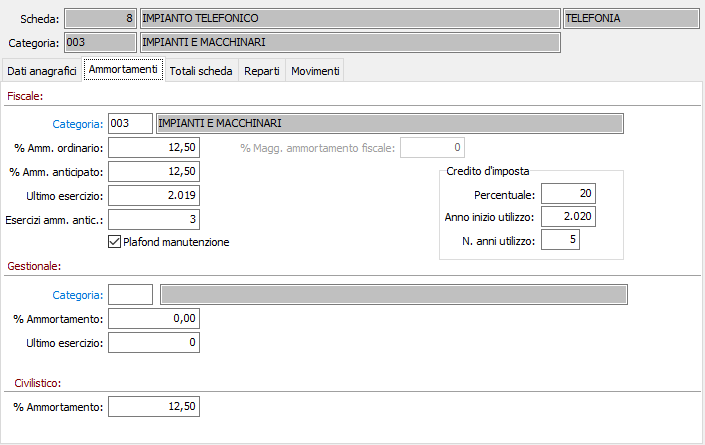

Ammortamenti
La sezione contiene i parametri per il calcolo degli ammortamenti fiscali e, ove interessi, gestionali (civilistici).
I campi ultimo esercizio e esercizi ammortamento anticipato vengono aggiornati automaticamente alla procedura.

CATEGORIA FISCALE: codice alfanumerico di 3 caratteri presente nella tabella Categorie Fiscali per indicare la categoria di appartenenza del cespite, attraverso la quale vengono proposte le percentuali di ammortamento nei campi successivi e definiti i sottoconti di imputazione di acquisti e ammortamenti del cespite. Sul campo sono attive le funzioni di ricerca (F9) ed accesso interattivo alla tabella collegata (CTRL+W).
PERCENTUALE AMMORTAMENTO ORDINARIO: viene proposta la percentuale di ammortamento ordinario del cespite contenuta nella categoria fiscale. L'informazione può essere modificata dall'utente.
PERCENTUALE AMMORTAMENTO ANTICIPATO/RIDOTTO: viene proposta la percentuale di ammortamento anticipato o ridotto del cespite contenuta nella categoria fiscale. L'informazione può essere modificata dall'utente. Il significato varia a seconda del valore del campo "Tipo ammortamento".
ULTIMO ESERCIZIO AMMORTIZZATO: contiene il numero dell'ultimo esercizio in cui è stato effettuato l'ammortamento fiscale del cespite.
NUMERO ESERCIZI DI AMMORTAMENTO ANTICIPATO: indica quanti esercizi di ammortamento anticipato sono già stati calcolati. Nel caso di cespiti nuovi il valore massimo è 3 mentre nel caso di cespiti usati il valore massimo è 1.
PLAFOND MANUTENZIONE: definisce se la scheda concorre a formare la base di calcolo delle manutenzioni (casella con segno di spunta).
PERCENTUALE MAGG. AMMORTAMENTO FISCALE: indicare in questo campo il valore dell'ammortamento fiscale eccedente il valore del bene (ad esempio "super-ammortamento" del 40%); il campo è visualizzato solo se presente in configurazione il doppio binario.
credito d'imposta: in questa sezione vanno riportati dati relativo al credito di imposta: percentuale anno di inizio utilizzo e numero degli anni per cui è previsto l'utilizzo.
CATEGORIA GESTIONALE: indicare l'eventuale categoria di ammortamento gestionale, presente nell’omonima tabella, del cespite attraverso la quale viene proposta la percentuale di ammortamento industriale e definite le quote di ammortamento industriale, ai fini della contabilità analitica. Sul campo sono attive le funzioni di ricerca (F9) ed accesso interattivo alla tabella collegata (CTRL+W).
PERCENTUALE AMMORTAMENTO GESTIONALE: viene proposta la percentuale di ammortamento gestionale del cespite contenuta nella categoria indicata. L'informazione può essere modificata dall'utente.
ULTIMO ESERCIZIO: Individua il numero dell'ultimo esercizio in cui è stato effettuato l'ammortamento industriale/gestionale del cespite.
PERCENTUALE AMMORTAMENTO CIVILISTICO: definisce la percentuale di ammortamento secondo i criteri civilistici, se attiva questa gestione, del cespite.